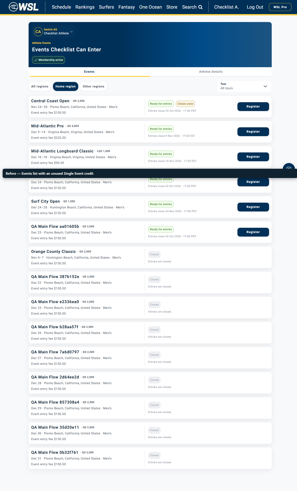
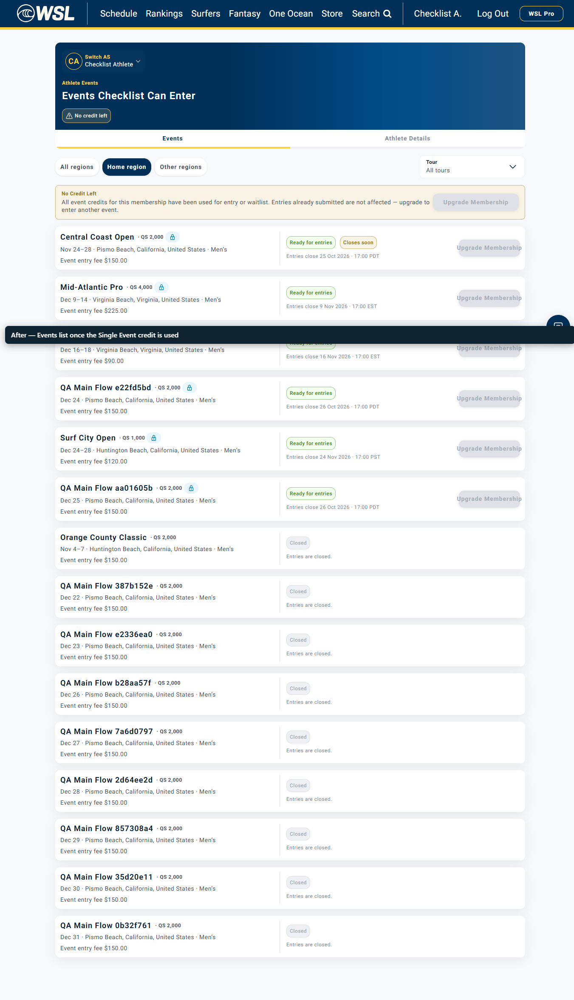

WSL-9579 rerun · Event cards after the Single Event credit is used
Rerun on dev, 19 Oct 2026, after wsl-django-bff #114 (commit 73d8200) · Jira WSL-9579
Fixed on dev. After the athlete's only Single Event credit is used, the Events page shows the "No credit left" pill and the No Credit Left banner, and every open event card shows Upgrade Membership instead of Register. No card on screen offers Register.
Recording
Events list before the entry, then after the credit is used. Caption bar at the bottom names each step.
Before — credit unused

After — credit used

| What | Before the entry | After one entry |
|---|---|---|
| Membership | Single Event, active, credit unused | Credit used (eventCount 1) |
| Banner | None | No Credit Left, with Upgrade Membership (disabled) |
| Open cards, API (all regions) | 22 cards offer Register | The 21 other open cards return Register disabled with no link (the plan lock; the frontend shows Upgrade Membership) |
| Open cards on screen (Home region tab) | Register | 6 of 6 show Upgrade Membership and "Upgrade your membership plan to access this event"; 0 show Register |
| Entered event | — | Waitlisted (QS-2026-M-087-001); no Register |
Data: results.json (API before and after, cards on screen, counts and checks; no credentials). Test account qa.checklist.account.95958e8685a542a9b952e0eb99e28e2f@btj5keea.mailosaur.net. Upgrade Membership is disabled and opens nothing yet, as stated in the ticket.